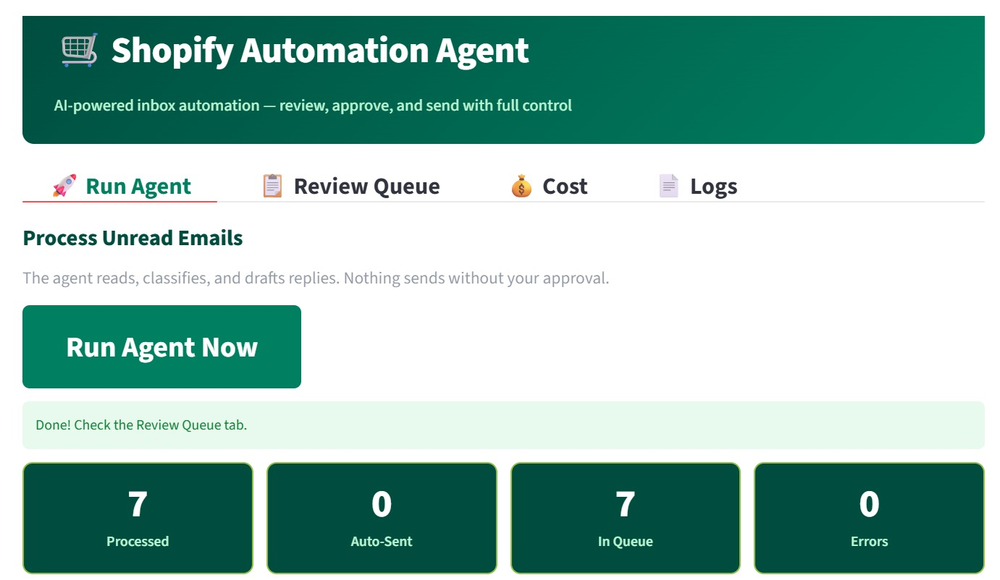
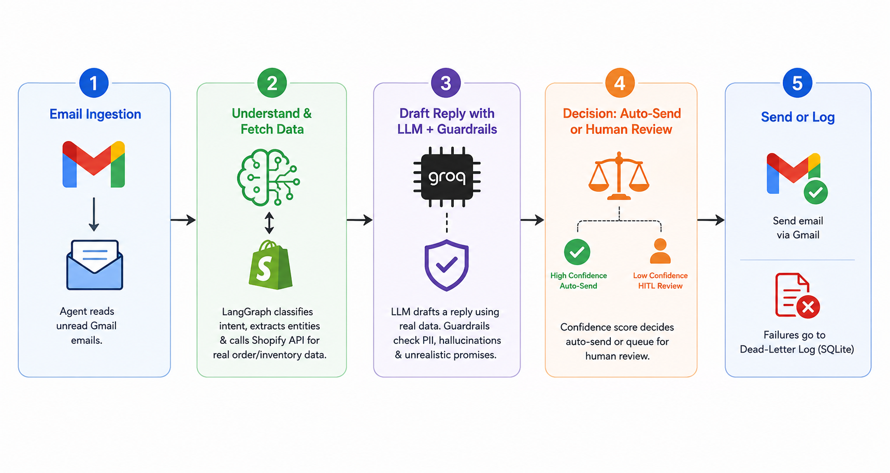
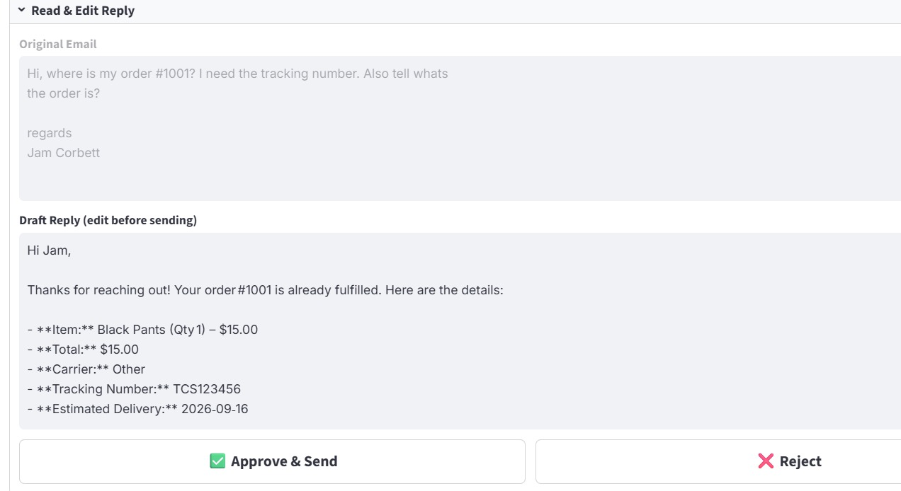

01 / 05
Receive
A customer message arrives over WhatsApp or email. The agent picks it up on its next run and opens a trace for that query.
Case study · AI systems · 02
Identifies intent, fetches live Shopify data, drafts a reply — and waits for a human to approve.
A production-shaped e-commerce agent built on the same LangGraph foundation as the Email Automation Agent. It reads customer queries over WhatsApp and email, classifies intent — order status, product info, returns — calls the Shopify API for live data, drafts a reply, and holds everything for human review before anything sends.

How it works

Five stages, one gate
01 / 05
A customer message arrives over WhatsApp or email. The agent picks it up on its next run and opens a trace for that query.
02 / 05
An LLM call over Groq identifies intent — order status, product info, return, or general inquiry — and routes each type differently downstream.
03 / 05
A tool call hits the Shopify API for live data — order details, shipping status, product availability. Every call is wrapped in retry logic with exponential backoff.
04 / 05
The draft lands in a Streamlit review queue. A person approves, edits, or rejects it — rejected drafts go back for a rewrite.
05 / 05
Approved replies go out through WhatsApp or email. Every stage — classify, query, draft, send — is logged with its cost and latency.
A real query, end to end

"Where is my order #1234? It has been 5 days."
Intent: order_status — routes to Shopify order tool call
Order #1234 shipped Sep 18, arriving Sep 21 via DHL · tracking #DE4912
"Hi! Your order #1234 shipped on Sep 18 and is arriving Sep 21 via DHL. Track here: [link]. Let me know if you need anything else."
Human reviewed and approved. Reply delivered in under 4 seconds from approval.
A commerce agent that sends a wrong shipping date or incorrect price to a customer is a customer-service problem, not just a code bug. So nothing leaves this agent without a person seeing it first.
Every LLM call carries a typed output schema, retry logic, and cost tracking. A failed tool call or a low-confidence classification holds the message for human review instead of guessing at an answer.
The Shopify tool calls are idempotent reads — no writes, no order mutations. Even if something fails inside the agent, it cannot corrupt customer data or trigger any order changes.
Tech used on this project
Open to freelance and contract work on agentic AI systems — Shopify automation, omnichannel agents, or something custom. If you can describe the problem, I can tell you honestly whether it is a good fit.